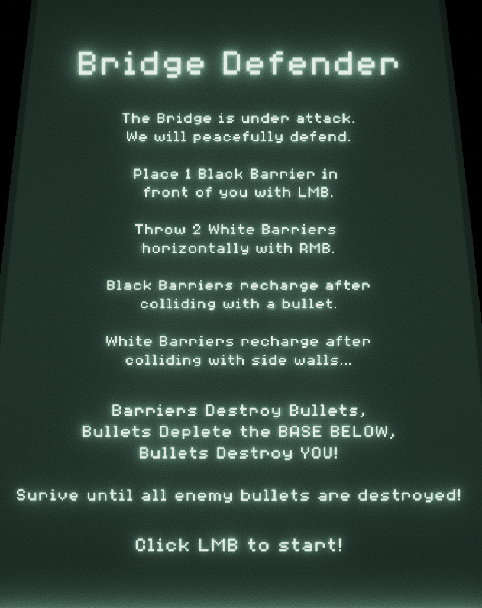

Bridge Defender
UNITY GAME AT THIS LINK --- BRIDGE DEFENDER -----
or click the image below, play in fullscreen for the best experience!

- Originality:
The combination of premise and gameplay is original. The game is like the opposite of space invaders in that you cannot attack back. The core originality comes from the strict use of defence mechanics as the means to complete your objective.
- Technical Merit:
I used the Unity 2D game engine for this project instead of Phaser so there is Technical Merit in using a new engine. I used particles effects for every interaction and a progressive difficulty system that gets harder as the level progresses.
- Prototype Postmortem:
I learned how to make a game in Unity 2D and use particle effects to make the game feel much more alive.
- Prototype Assets:
- All sounds and sprites were done by me!
- Prototype Closest Other Game:
The closest other game is my Analog assignment for this iteration called Bridge Defender. The core mechanic of that analog protype is that you can only defend incoming attacks with barriers and horizontal throws while not being able to strike back.
There is some influence from space invaders and pong.
- High Concept:
Your bridge is under attack by and your only pacficist way of defence is by placing barriers and throwing horizontal projectile to stop incoming fire.
- Theme:
There are no storymatic themes.
- Mandated Variety:
There is no mandated variety for this game because none was required. The input is keyboard and mouse. There game is deterministic because enemies will always fire after their bullet is destroyed and player behavior is always the same.
The genre is arcade-action-puzzler because the game has an arcade-like feel with realtime intensisty and puzzle like strategy in how to survive. The play style is the achiever as there is a clear objective to beat and beating that objective is the incentive to play.
- Prototype Goal:
The goal of this prototype was to make a game where you rely on defensive mechanics to win the game. By removing any form of attack, the intensisty relies on your quick movement and planning to survive the increasing in speed onslaught.
- Player Experience Goals:
I want the players to find the game initally very easy but as the game progresses they progessivly find it extremely challenging. By the last few bullets I want the player to feel accomplished from suriving by reacting and planning to the encounters.
- Gameplay:
On a long vertical bridge, 5 enemy shooters fire from the opposite end of where you start. Your side has a base with 3 health. You need to defend the base from the shooters fire downward toward your base. You move with WASD. You can up to place 6 black barriers at a time with Left-Mouse-Button. Black barriers are
placed directly in front of you. They are destroyed on contact with an enemy bullet. You can throw 2 white barriers horizontally at a time with Right-Mouse-Button. They go through bullets destroying all along their path until they collide with the bridge border. When a bullet is destroyed, the shooter that
shot it fires immediately. This means bullets are fired out of sync so planning is needed for when to block bullets. If the player touches a bullet they lose. If the base is hit by 3 bullets the player loses. The player wins by blocking 50 bullets without getting hit or losing all base health.
As more bullets are destroyed, the bullet speeds increase and the player movement speed increases making the game progressivly harder from start to finish.
- Strategies:
The best strategy is to stay on the bottom of the map and place barriers in a line back and forth while you strafe.
- Story/Setting/Premise:
The story is that you are a soldier that is ambushed by hostiles in a modern warfare setting. The premise is that you only have 30 bullets but there are 28 enemies that will not
stop shooting until they are all elimated.
- Target Audience:
The target audience is fans of hard games and arcade-like games like space invaders.
- Play Time:
The game takes 30 seconds to a minute to play.